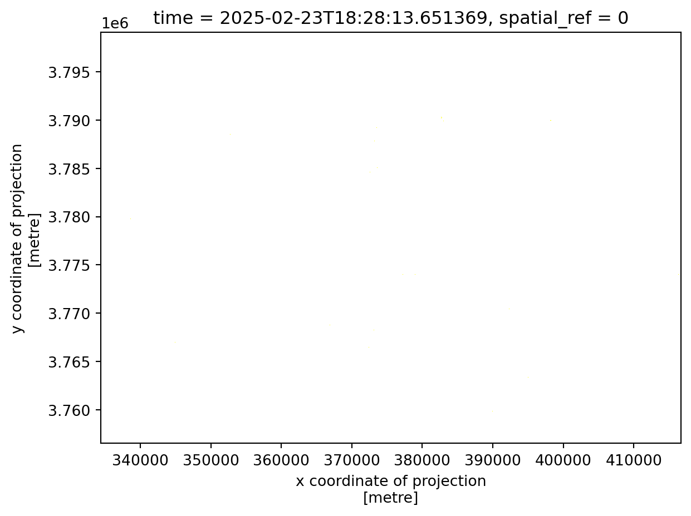
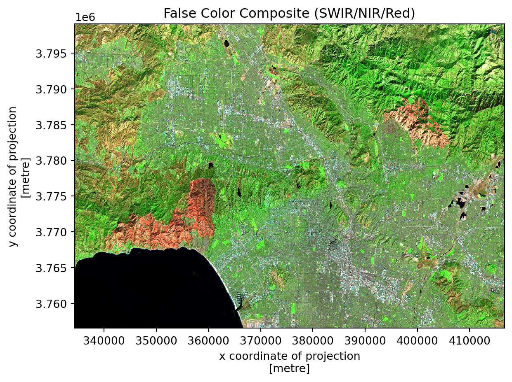

![]()
# Import required libraries
import xarray as xr
import rioxarray as rio
import geopandas as gpd
import numpy as np
import matplotlib.pyplot as pltAbout
In January 2025, the Eaton and Palisades fires swept through Los Angeles County, leaving lasting impacts on both the landscape and the communities within their paths. The Palisades Fire, which started on January 7, became one of the most destructive wildfires in California history, burning through the scenic Pacific Palisades neighborhood and nearby communities. Meanwhile, the Eaton Fire ignited in the foothills near Altadena and Pasadena, threatening densely populated areas and critical infrastructure.
Understanding wildfire impacts requires more than just mapping burned areas—it requires examining both the physical changes to the landscape and the social dimensions of who is affected. This analysis combines remote sensing techniques with environmental justice data to provide a comprehensive view of these devastating fires.
Repository: https://github.com/rellimylime/eds220-hwk4

Highlights
This analysis demonstrates several key geospatial analysis techniques:
- False color visualization using Landsat 8 SWIR/NIR/Red bands to identify burn scars and assess vegetation health
- Multi-dataset integration combining satellite raster imagery with vector fire perimeter and census tract data
- CRS management and reprojection to ensure spatial alignment across different data sources
- Environmental justice analysis examining the socioeconomic characteristics of communities affected by the fires
Data
Landsat 8 Surface Reflectance Data
This dataset contains atmospherically corrected surface reflectance data from the Landsat 8 satellite, captured on February 23, 2025. The imagery includes five spectral bands (red, green, blue, near-infrared, and shortwave infrared) clipped to the area surrounding the Eaton and Palisades fire perimeters. The data was retrieved from the Microsoft Planetary Computer STAC catalog in NetCDF format.
Citation: Microsoft Planetary Computer. (2025). Landsat Collection 2 Level-2 [Data file]. Retrieved from https://planetarycomputer.microsoft.com/dataset/landsat-c2-l2
Fire Perimeter Shapefiles
Official fire perimeter polygons for the Eaton and Palisades fires as of January 21, 2025, provided in EPSG:3857 (Web Mercator) projection. These shapefiles include boundary geometries and attribute information for each fire.
Citation: Palisades and Eaton Dissolved Fire Perimeters. (2025). Fire perimeter shapefiles [Geospatial dataset]. ArcGIS Hub. Retrieved from https://hub.arcgis.com/maps/ad51845ea5fb4eb483bc2a7c38b2370c
Environmental Justice Index (EJI) Data
The Environmental Justice Index provides census tract-level data on environmental and socioeconomic factors. This analysis uses the 2024 California EJI dataset, which includes demographic information, poverty statistics, and environmental burden indicators for communities across the state.
Citation: Centers for Disease Control and Prevention/Agency for Toxic Substances and Disease Registry. (2024). Environmental Justice Index, California [Geodatabase]. Retrieved from https://www.atsdr.cdc.gov/placeandhealth/eji/index.html
Analysis 1: False Color Visualization
Setup and Data Import
Loading Fire Perimeter Data
Fire perimeters provide the spatial boundaries for our analysis, allowing us to focus on the areas most affected by the fires. We begin by loading the data and doing a simple exploration of its contents.
# Load fire perimeter shapefiles
eaton = gpd.read_file('data/Eaton_Perimeter_20250121.shp')
palisades = gpd.read_file('data/Palisades_Perimeter_20250121.shp')Code
# Explore the data structure
print("Eaton Fire Perimeter:")
print(eaton.info())
print("\nPalisades Fire Perimeter:")
print(palisades.info())Eaton Fire Perimeter:
<class 'geopandas.geodataframe.GeoDataFrame'>
RangeIndex: 20 entries, 0 to 19
Data columns (total 5 columns):
# Column Non-Null Count Dtype
--- ------ -------------- -----
0 OBJECTID 20 non-null int64
1 type 20 non-null object
2 Shape__Are 20 non-null float64
3 Shape__Len 20 non-null float64
4 geometry 20 non-null geometry
dtypes: float64(2), geometry(1), int64(1), object(1)
memory usage: 932.0+ bytes
None
Palisades Fire Perimeter:
<class 'geopandas.geodataframe.GeoDataFrame'>
RangeIndex: 21 entries, 0 to 20
Data columns (total 5 columns):
# Column Non-Null Count Dtype
--- ------ -------------- -----
0 OBJECTID 21 non-null int64
1 type 21 non-null object
2 Shape__Are 21 non-null float64
3 Shape__Len 21 non-null float64
4 geometry 21 non-null geometry
dtypes: float64(2), geometry(1), int64(1), object(1)
memory usage: 972.0+ bytes
NoneCoordinate Reference System Check
Code
# Check CRS
print(f"Eaton CRS: {eaton.crs}")
print(f"Palisades CRS: {palisades.crs}")Eaton CRS: EPSG:3857
Palisades CRS: EPSG:3857Summary of fire perimeter exploration:
Both the Eaton and Palisades fire perimeter datasets use EPSG:3857. The Eaton perimeter contains 20 polygon features while the Palisades perimeter has 21. Both Datasets share the same 5-column structure: OBJECTID, type, Shape_Are, Shape_Len, and geometry. Both of these will need to be reprojected to the crs of the raster before analysis.
Loading and Processing Landsat Imagery
The Landsat 8 scene contains multiple spectral bands that capture different wavelengths of reflected light. Each band provides unique information about surface features. Once again we load the data and do a simple exploration.
# Import Landsat data
landsat = xr.open_dataset('data/landsat8-2025-02-23-palisades-eaton.nc')
# Display dataset information
landsatCode
# Explore dimensions and coordinates
print("Dimensions:", landsat.dims)
print("\nCoordinates:", list(landsat.coords))
print("\nData variables:", list(landsat.data_vars))Dimensions: FrozenMappingWarningOnValuesAccess({'y': 1418, 'x': 2742})
Coordinates: ['y', 'x', 'time']
Data variables: ['red', 'green', 'blue', 'nir08', 'swir22', 'spatial_ref']Summary of Landsat Exploration:
The landsat 8 dataset is stored in NetCDF format which contains 5 spectral bands (red, green, blue, nir08, swir22) as well as a spatial_ref variables that stores crs information. The raster has dimensions of 2742 pixels (width) by 1418 pixels (height) and covers the area around both fires. The dataset includes three coordinates; x and y for position, and time as the third indicating observation date.
Restoring Geospatial Information
Before we can perform spatial operations, we need to verify and restore the coordinate reference system (CRS) information.
if (landsat.rio.crs == None):
print("This object is not currently geospatially referenced")
else:
print("This object is geospatially referenced")This object is not currently geospatially referenced# Recover the geospatial information from spatial_ref
landsat = landsat.rio.write_crs(landsat.spatial_ref.crs_wkt)The dataset’s CRS is restored from the spatial_ref metadata variable, setting it to EPSG:32611 (WGS 84 / UTM zone 11N), which is appropriate for the Los Angeles area.
Handling Missing Values
# Identify which bands have NaN values
nan_bands = []
for band in ['red', 'green', 'blue', 'nir08', 'swir22']:
if np.isnan(landsat[band]).any():
nan_bands.append(band)
# Fill NaN values with 0
landsat = landsat.fillna(0)Bands with NaN values: ['green', 'blue']All five spectral bands contain some NaN values. These can occur at the edges of satellite scenes or in areas with clouds. Filling them with zero prevents visualization errors.
True Color Visualization
A true color image displays the red, green, and blue bands as they would appear to the human eye. Often raw satellite contains extreme values that can make the rest of the image look washed out when plotting. This can be corrected by handling outliers and missing values properly as demonstrated below
# Plot the true color image
landsat[['red', 'green', 'blue']].to_array().plot.imshow()
plt.show()
# Create true color composite with robust scaling
landsat[['red', 'green', 'blue']].to_array().plot.imshow(robust=True)
plt.title('True Color Image - Landsat 8')
plt.show()
The robust=True parameter clips extreme outlier values to improve visualization, preventing a few bright pixels from washing out the entire image.
False Color Analysis
False color composites use non-visible wavelengths to reveal features invisible to the human eye. By assigning shortwave infrared (SWIR) to red, near-infrared (NIR) to green, and red to blue, we create an image where healthy vegetation appears bright green and burned areas show distinct reddish-brown tones.
# Create false color composite (SWIR/NIR/Red)
landsat[['swir22', 'nir08', 'red']].to_array().plot.imshow(robust=True)
plt.title('False Color Composite (SWIR/NIR/Red)')
plt.show()
Why this band combination?
- Healthy vegetation has high NIR reflectance and low SWIR reflectance → appears bright green
- Burned areas have low NIR reflectance and moderate SWIR reflectance → appears reddish-brown
- Urban areas show moderate reflectance across bands → appears in neutral tones
Creating the Final Map
To provide geographic context, we overlay the fire perimeters onto our false color image. This requires reprojecting the vector data to match the raster’s coordinate system (EPSG:32611 - UTM Zone 11N).
# Reproject fire perimeters to match Landsat CRS
eaton = eaton.to_crs(landsat.rio.crs)
palisades = palisades.to_crs(landsat.rio.crs)
# Create comprehensive map
fig, ax = plt.subplots(figsize=(12, 12))
# Plot false color composite
landsat[['swir22', 'nir08', 'red']].to_array().plot.imshow(
ax=ax,
robust=True,
add_colorbar=False
)
# Overlay fire perimeters
eaton.boundary.plot(ax=ax, edgecolor='yellow', linewidth=2, label='Eaton Fire')
palisades.boundary.plot(ax=ax, edgecolor='red', linewidth=2, label='Palisades Fire')
# Add labels and formatting
plt.title('Eaton and Palisades Fires - False Color Analysis',
fontsize=16, fontweight='bold', pad=20)
plt.legend(loc='upper right', fontsize=12)
ax.set_xlabel('Easting (meters)', fontsize=12)
ax.set_ylabel('Northing (meters)', fontsize=12)
# Add fire name annotations
ax.text(eaton.geometry.centroid.x.values[0],
eaton.geometry.centroid.y.values[0] - 2700,
'Eaton Fire',
color='black', fontsize=14, fontweight='bold',
bbox=dict(boxstyle='round', facecolor='white', alpha=0.7))
ax.text(palisades.geometry.centroid.x.values[0] - 22000,
palisades.geometry.centroid.y.values[0] + 8000,
'Palisades Fire',
color='black', fontsize=14, fontweight='bold',
bbox=dict(boxstyle='round', facecolor='white', alpha=0.7))
plt.tight_layout()
plt.show()
Figure Interpretation
This false color composite displays the Eaton and Palisades fire areas captured by Landsat 8 on February 23, 2025. The image uses shortwave infrared (SWIR), near-infrared (NIR), and red bands to highlight burn scars and vegetation health.
Key features:
- Bright green areas = Healthy vegetation (high NIR reflectance)
- Reddish-brown areas = Burned areas and bare soil (low NIR, moderate SWIR)
- Urban/developed areas = Neutral tones (moderate reflectance across bands)
The fire perimeters are overlaid in yellow (Eaton Fire) and red (Palisades Fire) to delineate the official burn boundaries. This false color combination is particularly effective for assessing fire severity and monitoring landscape recovery, as the spectral signatures of healthy vs. burned vegetation are distinctly different in the infrared wavelengths.
Analysis 2: Environmental Justice Dimensions
Wildfires don’t impact all communities equally. This analysis examines the socioeconomic characteristics of census tracts affected by the fires to understand the environmental justice implications.
Data Preparation
The EJI dataset contains census tract-level data for all of California with 174 columns including demographic, environmental, and health vulnerability indicators. Both the EJI data and fire perimeters use EPSG:3857 (Web Mercator) coordinate reference system.
Identifying Affected Communities
Using spatial intersection, we identify which census tracts overlap with the fire perimeters, then clip them to analyze only the areas actually within the burn zones.
Analyzing Socioeconomic Vulnerability
The Environmental Justice Index includes percentile rankings for various vulnerability indicators. Here we examine EPL_POV200, which represents the percentile rank of persons living below 200% of the federal poverty level—a measure of economic vulnerability.
fig, (ax1, ax2) = plt.subplots(1, 2, figsize=(16, 8))
# Define common scale for comparison
eji_variable = 'EPL_POV200'
vmin = min(eji_clip_palisades[eji_variable].min(),
eji_clip_eaton[eji_variable].min())
vmax = max(eji_clip_palisades[eji_variable].max(),
eji_clip_eaton[eji_variable].max())
# Palisades Fire area
eji_clip_palisades.plot(
column=eji_variable,
vmin=vmin, vmax=vmax,
cmap='YlOrRd',
legend=False,
ax=ax1,
edgecolor='black',
linewidth=0.5
)
ax1.set_title('Low-Income Population\nPalisades Fire Area',
fontsize=14, fontweight='bold')
ax1.axis('off')
# Eaton Fire area
eji_clip_eaton.plot(
column=eji_variable,
vmin=vmin, vmax=vmax,
cmap='YlOrRd',
legend=False,
ax=ax2,
edgecolor='black',
linewidth=0.5
)
ax2.set_title('Low-Income Population\nEaton Fire Area',
fontsize=14, fontweight='bold')
ax2.axis('off')
# Overall title
fig.suptitle('Percentile Rank of Low-Income Population in Fire-Affected Areas\n(Income <200% Federal Poverty Level)',
fontsize=16, fontweight='bold', y=0.98)
# Shared colorbar
sm = plt.cm.ScalarMappable(
cmap='YlOrRd',
norm=plt.Normalize(vmin=vmin, vmax=vmax)
)
cbar_ax = fig.add_axes([0.25, 0.15, 0.5, 0.03])
cbar = fig.colorbar(sm, cax=cbar_ax, orientation='horizontal')
cbar.set_label('Percentile Rank (0-100)', fontsize=12)
plt.tight_layout()
plt.show()
Key Findings:
This analysis reveals important differences in socioeconomic vulnerability between the two fire areas. Higher percentile values (darker colors) indicate census tracts where a larger proportion of the population faces economic vulnerability compared to other areas in California.
Understanding these patterns is crucial for:
- Emergency response planning - ensuring resources reach vulnerable populations
- Recovery assistance - targeting aid to communities with fewer economic resources
- Long-term resilience planning - addressing pre-existing vulnerabilities that compound disaster impacts
Conclusion
This analysis demonstrates the power of combining remote sensing data with socioeconomic datasets to understand wildfire impacts holistically. The false color analysis reveals the spatial extent and severity of landscape damage, while the environmental justice analysis highlights which communities face the greatest challenges in recovery.
As climate change increases wildfire frequency and intensity, these integrated approaches become essential for effective disaster response and equitable recovery planning. By making both the physical and social dimensions visible, we can better support communities in building resilience against future fires.
References
Citation
BibTeX citation:
@online{miller2025,
author = {Miller, Emily},
title = {Analyzing the 2025 {Los} {Angeles} {Wildfires:} {Remote}
{Sensing} and {Environmental} {Justice}},
date = {2025-11-29},
url = {https://rellimylime.github.io/posts/eds220-final/},
langid = {en}
}
For attribution, please cite this work as:
Miller, Emily. 2025. “Analyzing the 2025 Los Angeles Wildfires:
Remote Sensing and Environmental Justice.” November 29, 2025. https://rellimylime.github.io/posts/eds220-final/.